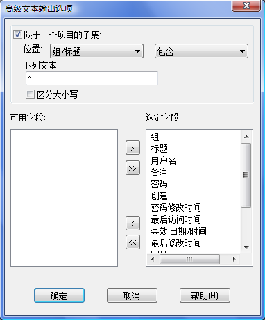

Password Safe 支持已存储密码输出(和输入)到(从)若干格式文件。 需要删除数据使用文件 -> 输出菜单。支持格式为:
输出适用于早期版本的 Password Safe 文件，只需选择想要的格式和指定希望创建的数据库文件名称。
Password Safe 允许输出密码项目为文本文件。该文件可能因此被使用或被其它程序修改。
将首先询问输入主密码或让确认可能输出数据库为一个未加密的文本文件。

同样可以指定部份选项:
密码项目将被输出字段之间存在标记的文件。例如: 在组、标题、用户名、密码和备注字段之间。“组/标题”考虑为单字段。
任何字段包含一个空白时将被输出在双引号字符里。
只有备注字段可以包含多行项目。正常处理每个备注行位置在输出文本字段里使用一个分隔行。
不过，这样使得它难以分类或使用比较两个不同输出文件时。要克服这个可以在输出它们时指定一个多行定界符分隔。
如果转到输入一个文本文件创建具有这样一个定界符，那么它必须被指定，
所有备注行将作为一个单独行出现在数据库结果里。
如果必要，标记想要标记的所有分隔行于备注字段的一行上然后输入符号用作定界符。
由于备注字段整体被双引号标注，该符号禁止被选为多行定界符。

该对话框允许只输出基于文本指定字段项目的部份和/或指定哪些字段被输出。 在选定完成时单击确定或取消不作出任何更改返回到输出文本对话框。
此时将询问用户提供新文件名称以及如果文件已存在所指定的目录时确认覆盖同名文件。

该对话框允许你只输出部份项目， 基于指定字段的文本和/或指定哪些字段被输出。完成时单击确定或取消返回到输出 XML 对话框不作出任何更改。 请注意 XML 规划需要标题和密码字段，因此这些不能被取消选定。
你将接着被询问需要供给新文件名和如果文件已存在于你所指定的目录时需要确认覆盖同名文件。